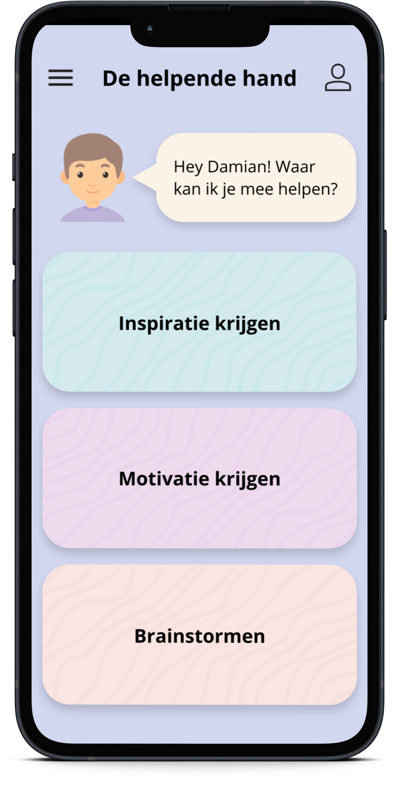
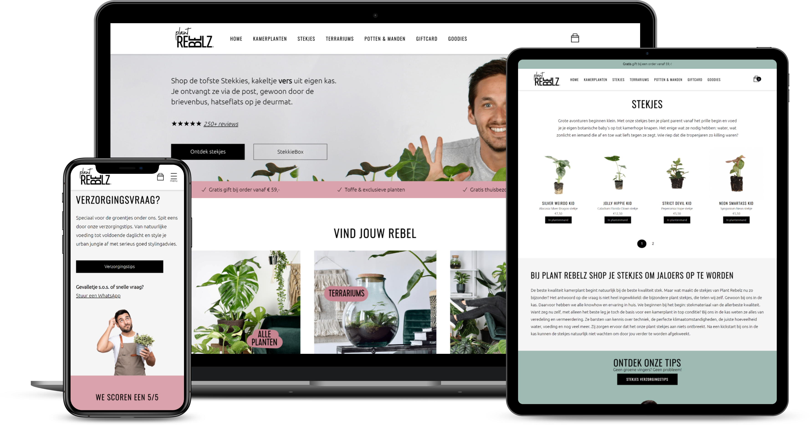
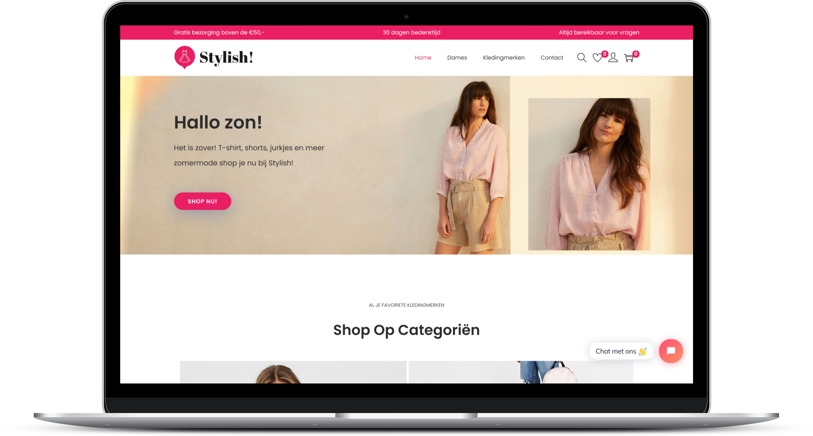
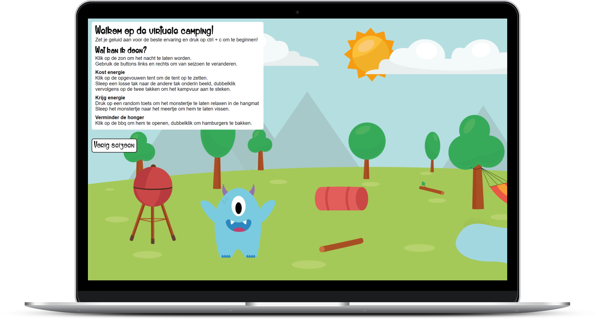
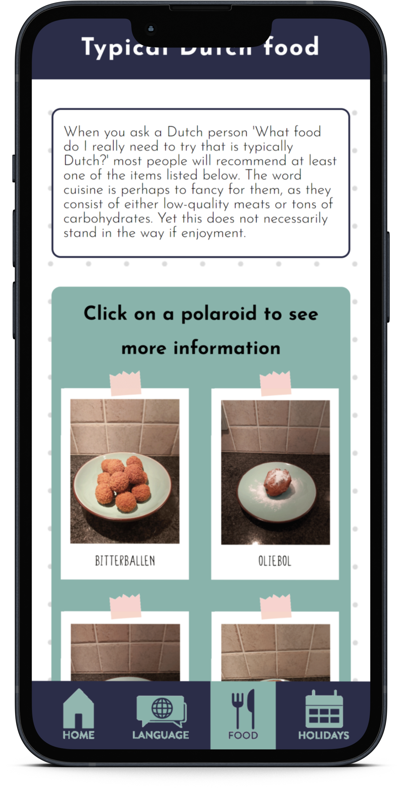

Over mij
Ik ben Pip Harsveld, 19 jaar oud en ik woon in Uitgeest. In 2019 heb ik mijn havo diploma gehaald aan het Kennemer College in Beverwijk en nu zit ik in mijn tweede jaar van de opleiding Communication & Multimedia Design (CMD) aan de Hogeschool van Amsterdam (HvA).
Mijn propedeuse heb ik cum laude gehaald en tijdens dat eerste jaar heb ik enorm veel geleerd over uiteenlopende onderwerpen. Tijdens alle projecten die ik heb gedaan ben ik erachter gekomen dat mijn passie echt ligt bij front-end development. Ik vind het niet alleen heel tof om mijn kennis om te zetten in functionele en toegankelijke websites, maar elke dag ben ik ook bezig met het leren van nieuwe dingen om zo mijn kennis te vergroten.
In mijn vrije tijd ben ik graag creatief bezig en speel ik bordspelletjes met vrienden en familie. Daarnaast ben ik een echte plantengekkie en verzorg ik met heel veel liefde mijn 17 kamerplanten.
Skills en tools
-
HTML5
-
CSS3
-

JavaScript
-
VS Code
-
Wordpress
-
Adobe CC
-
Web accessibility
-

Responsive websites
Projecten
Tijdens de anderhalf jaar dat ik nu mijn studie volg, heb ik een hoop opdrachten gemaakt die allemaal verschillen van focus. Hieronder vind je de werken waar ik het meest trots op ben.
-
 -
 -
 -
 -
-

Contact
Heb je een vraag, opmerking of wil je meer werken van mij zien? Neem dan even contact met me op via een van de onderstaande kanalen. Tot snel!